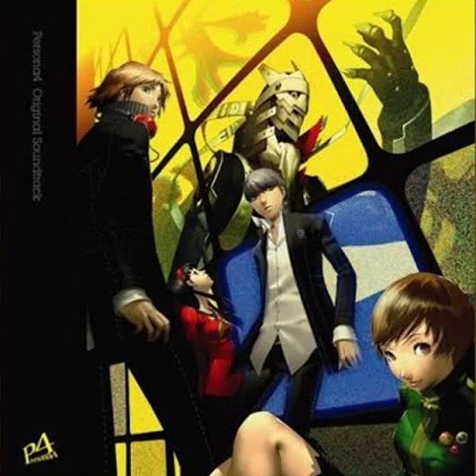

What's it about?
Inaba—a quiet town in rural Japan sets the scene for budding adolescence in Persona 4 Golden. A coming of age story that sets the protagonist and his friends on a journey kickstarted by a chain of serial murders. Explore meeting kindred spirits, feelings of belonging, and even confronting the darker sides of one's self.
Persona 4 Golden promises meaningful bonds and experiences shared together with friends.
Source: Steam store page
Quick facts
- Released: 2012 (came to PC in 2020)
- Platforms: PC, PS4, Xbox One, Xbox Series X|S, Nintendo Switch, PS Vita
- Genre: Role-playing, social simulation
- Length: About 70 hours (main story)
Music

Heaven - Shihoko Hirata